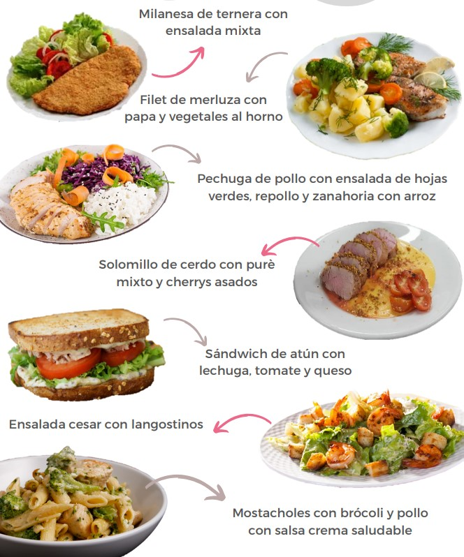
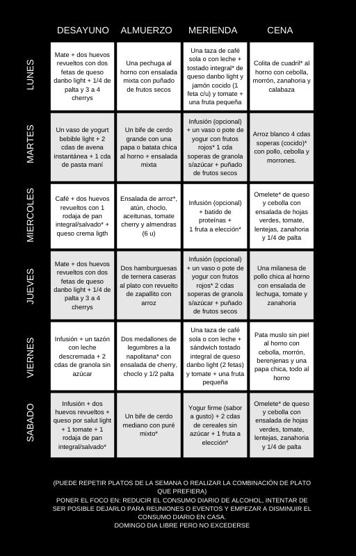

EJEMPLOS

EJEMPLO ORGANIZACION DE LA SEMANA

PONER EL FOCO EN: REDUCIR EL CONSUMO DIARIO DE ALCOHOL, INTENTAR
DE SER POSIBLE DEJARLO PARA REUNIONES O EVENTOS Y EMPEZAR A
DISMINUIR EL CONSUMO DIARIO EN CASA.
DOMINGO DIA LIBRE PERO NO EXCEDERSE
ACLARACIONES
*Milanesa: idealmente, caseras. No utilizar aceite en la placa,
rociar con fritolin de ambos lados cada milanesa. Puede rebozarlas
con pan rallado, con avena, con polenta, con semillas, etc.
*Pan integral: utilizar marca VALMAIRA (se consigue en dietética),
en caso de no conseguir, utilizar cualquier pan integral de
almacén o supermercado (tipo fargo doble salvado, lactal paquete
verde, etc).
*Colita de cuadril: puede utilizar cualquier otro corte magro, una
vez cocida la carne pesar la porción establecida que son 150 g (en
cocido)
*Puré de mixto: no agregar materia grasa, preferentemente agregar
una cda de queso untable. Condimentos a gusto sal, pimienta, nuez
moscada, etc.
*Frutos rojos: se pueden utilizar los congelados, recordar
sacarlos del freezer la la mañana y dejarlos en un bowl en la
heladera para utilizarlos luego.
*Arroz: la cantidad siempre es en cocido, si quisiera hacer mucha
cantidad para reservarla como guarnición para otras comidas,
entonces hará más cantidad.
*Choclo: puede utilizar los granos congelados sin problemas, en
ese caso los pone al microondas un minuto y luego los agrega a la
ensalada.
*Aceitunas: preferentemente comprar aceitunas sin carozo cortadas
en rodajas y agregar 1 cda sopera bien colmada (sin la salmuera)
*Omelete: utilizar 2 huevos y 2 claras. utilizar queso port salut
light (60 g en unidad casera sería aproximadamente 3 lonjas
medianas), el relleno puede ser de queso y cebolla, queso y
arvejas, queso y atún, queso y tomate, queso y espinaca, etc.
*Medallones a la napolitana: agregarle 15 g de queso port salut
light a cada medallón y opcional una rodaja de tomate
*Batido de proteínas (opcional): utilizará un batido de 1 scoop
(con agua o leche, lo que prefiera) los días de entrenamiento,
idealmente post entrenamiento, no hace falta que sea
INMEDIATAMENTE, ejemplo: entrenó a las 16 hs, entonces en la
merienda se suma el batido.
**Las frutas que están puestas en el mosaico pueden ser
sustituidas por cualquiera de su preferencia, en caso de no querer
comerla en el momento que está indicado, puede reservarla como
colación o snack.
**Si en las ensaladas figura algún vegetal que no tiene o por el
contrario quiere agregar alguna verdura que no figura puede
hacerlo sin ningún problema
**De postre siempre podrá utilizar si lo desea gelatina sin azúcar
sola o con frutas.